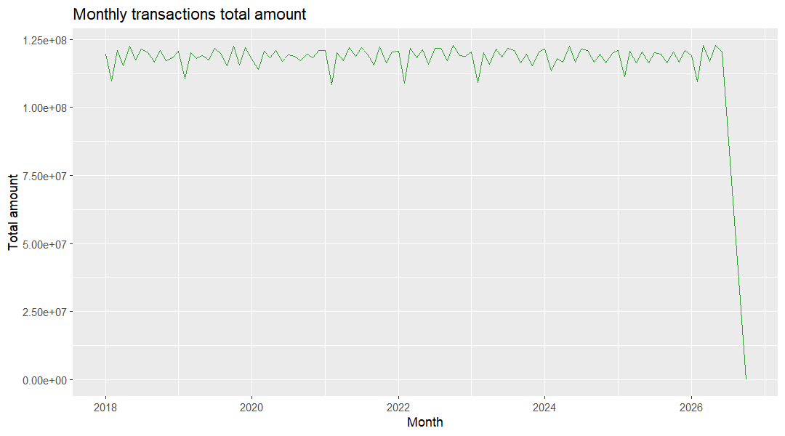

Transactions
Is transaction value concentrated in a few channels?
Business question: Head of Digital Channels / payments lead would ask this to guide channel investment and cost negotiation.
Data used: marts.mart_monthly_transactions (grain: one row per month x transaction type x channel x merchant category x direction x region)
Finding: Total transaction value is 12,096,774,249.05 across 103 months, split almost evenly across six channels (16.62% to 16.70% each).

Segment view: By region, value runs from North 26.76% to East 9.88% (2.7x), while transaction types split 9.97-24.96%. So what: plan capacity and pricing by region; the flat channel mix is not a reason to push traffic between channels for share. Query: docs/insights/queries/transaction_segments.sql.
So what: Negotiate per-channel processing costs and migrate low-value traffic to cheaper channels without risking share, since no single channel dominates.
Reproduce: docs/insights/queries/transaction_channels.sql with psql -U postgres -d banking_delta -f docs/insights/queries/transaction_channels.sql